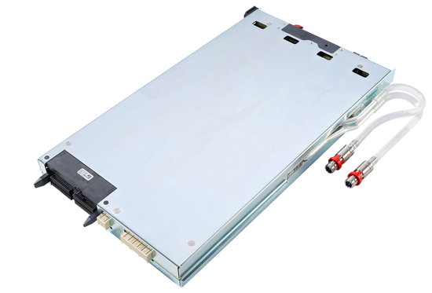

Utility Card
The Utility Card provides 256 utility lines and several utility power supplies on eight 4-row pogo blocks. The cards can reside in any slot of a V93000 EXA Scale system. There are two variants available, EK051 and EK051A. The EK051 Utility card is used in SmarTest 8 only. The EK051A Utility card is used in both SmarTest 7 (SmarTest version 7.10 and higher) and SmarTest 8.
In the basic configuration, a V93000 EXA Scale system is equipped with few internal utility resources. These internal resources are 32 statically controlled utility lines, one +5 V utility power supply and a replacement of the legacy SE-UDPS supply.
- 256 dynamically controlled utility lines,
- one +5 V utility power supply that provides more current,
- a replacement of the legacy External utility power supply,
- one utility power supply providing +15 V, -15 V and
- two floating 24 V utility power supplies.

Multiple Utility Cards can be installed. This enables high scalability of the provided utility resources.
The utility lines and utility power supplies of a Utility Card are routed to eight 4-row utility pogo blocks.
Functional changes
- Introduced in SmarTest 7.10.0